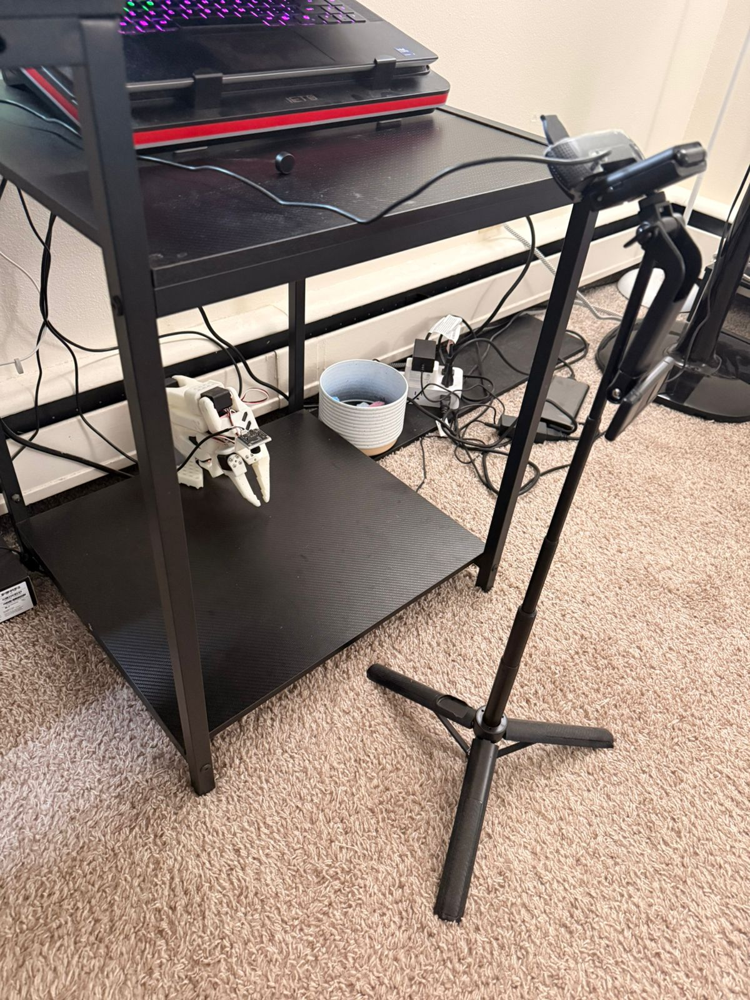

Data Composition vs Architecture in Robot Imitation Learning
When does narrow-task training transfer? A study across 16 datasets and 3 architectures.

If a human can do it after one demo, why can't the robot?
Single-sponge training, single-sponge inference

Single-sponge training, multi-sponge inference

Imitation learning policies do not generalize the way humans do. We measure how badly — and what data closes the gap.
Research Question
★When does narrow-task training transfer to harder task variants in imitation learning, and how do architecture and data composition interact to determine compositional generalization?
- Q1How do K (Known, 64 ep), R (Random, 64 ep), Mixed (50/50, 64 ep), Combined (100/100, 128 ep) dataset variants affect spatial generalization?
- Q2Does training on one task generalize to harder task variants?
- Q3Does architectural pretraining (SmolVLA, Pi0.5) close the human-robot generalization gap?
Task Family — Compositional Decomposition
ST1Single sponge, clean
Pick the blue sponge and place it in the bowl.
- D1-K (64)
- D1-Mixed (64)
- D1-R (64)
- D1-Combined (128)
ST2Multi sponge, clean
Pick all blue sponges (2) and place them in the bowl.
- D2-K (64)
- D2-Mixed (64)
- D2-R (64)
- D2-Combined (128)
ST3Single sponge + distractors
Pick the blue sponge from a clutter of distractors.
- D3-K (64)
- D3-Mixed (64)
- D3-R (64)
- D3-Combined (128)
ST4Multi sponge + distractors (held out)
No training data collected — tested only via D_Universal as a pure compositional generalization probe.


ST3 and ST4 evaluation in progress for final report (5 / 6).
From Teleoperation to 16 Dataset Recipes
384
episodes collected
5.7 hours
total collection time
2.51 h video + 30 s/episode reset
128 episodes × 3 tasks (T1, T2, T3)
128 episodes × 3 tasks (T1, T2, T3)
🤗 HF
Open dataset:
huggingface.co/datasets/aswinkumar99/LeRobot-SO101-Pick-Place
— Page 1, Trending LeRobot tag
| K | R | Mixed | Combined | Cross-task | |
|---|---|---|---|---|---|
| T1 | D1-K | D1-R | D1-Mixed | D1-Combined | D_Universal · D_D2D3 D_D1D2-Half · D_D1D3-Half |
| T2 | D2-K | D2-R | D2-Mixed | D2-Combined | |
| T3 | D3-K | D3-R | D3-Mixed | D3-Combined |
Total: 16 datasets


Three Architectures, Three Design Philosophies
ACT
~84 M params
Transformer encoder–decoder + CVAE
Properties
- Action Chunking Transformer (Zhao et al., ALOHA)
- Trained from scratch — no visual or language priors
- Predicts a horizon of future actions per observation
- CVAE smooths multi-modal demonstrations
Fine-tuning recipe (cloud_training/train_one.sh)
--policy.type=act— trained from scratch- 60 000 steps · batch 32 · save every 15 000
- Cameras: overhead + wrist (native)
Prediction: Should plateau without data scale.
SmolVLA
~450 M params
SmolVLM-2 (256 M) + action expert (~200 M)
Properties
- Hugging Face open VLA, released 2025
- Pretrained on community LeRobot datasets
- VLM backbone provides language + visual grounding
- Designed for small-data downstream fine-tunes
Fine-tuning recipe (cloud_training/train_one.sh)
--policy.path=lerobot/smolvla_base- 20 000 steps · batch 128 (-all) / 64 (splits) · save every 5 000
- Cameras renamed: overhead→camera1, wrist→camera2
Prediction: Should benefit from limited data via VLM grounding.
Pi0.5
~3.4 B params
PaliGemma (3 B) + flow-matching action head
Properties
- Physical Intelligence π₀.₅ (2025)
- Flow-matching policy on continuous actions
- Trained cross-embodiment on diverse robots
- High-level VLA reasoning + low-level expert
Fine-tuning recipe (cloud_training/train_one.sh)
--policy.path=lerobot/pi05_base· BF16 · trained on H200train_expert_only=true·freeze_vision_encoder=true- 20 000 steps · batch 32 · LR 5e-5 · 1 000-step warmup
- Cameras renamed: overhead→base_0_rgb, wrist→right_wrist_0_rgb (+1 empty)
Prediction: Robust priors but higher inference cost.
DiT excluded after pre-flight — failed in-distribution evaluation. Param counts are approximate.
Training Structure — 202 GPU-hours on Cloud Infrastructure
202
total GPU-hours
Per-model averages: ACT ≈ 3 h × 16 = 48 h · SmolVLA ≈ 4.5 h × 16 = 72 h · Pi0.5 ≈ 6.6 h × 7 = 46 h · DiT ≈ 9 h × 4 = 36 h.
ACT
SmolVLA
6 × RTX PRO 6000 Blackwell
parallel training pool
Wall-clock
26 h
×
GPUs
6
=
GPU-hours
156 h
- • 32 models — ACT × 16 (~3 h each) + SmolVLA × 16 (~4.5 h each)
- • Docker image:
huggingface/lerobot-gpu - • Launched via
train_matrix.sh all&train_combo_matrix.sh - • ACT: 60 K steps / SmolVLA: 20 K steps
Pi0.5
NVIDIA H200
single-GPU run for the 3.4 B-param model
Wall-clock
46 h
=
GPU-hours
46 h
- • 7 models (3 base ×
-all+ 4 combo) - •
--policy.dtype=bfloat16· batch size 32 - •
train_expert_only=true, vision encoder frozen - • 20 K steps · 1 K-step warmup · LR 5e-5
Inference
RTX 4090 Mobile
on-robot laptop
ACT
30 Hz
SmolVLA
6 Hz
Pi0.5
5 Hz
~6× speed gap between ACT and the VLA policies — relevant to the time-to-success results.
DiT × 4 attempted but excluded after pre-flight (zero in-distribution success). All other 39 models converged.
Evaluation Protocol & Dual Metrics

8
× 1.0
Known — 6 marked positions on the bench
8
× 1.5
Random — uniformly placed on the bench
Per cell
16 trials = 8 Known + 8 Random
Score = (K_wins × 1.0) + (R_wins × 1.5)
Maximum 20
Random positions are weighted 1.5× to penalize position overfitting:
a model that memorizes the marked spots will score 8 / 20, while one that
generalizes earns the full 20.
Metric 01
Success rate (out of 20)
Measures what succeeds.
Metric 02
Median time-to-success
Measures how decisively.
Identical pre-generated scenes across all models.
Custom iPad Dashboard for Field Evaluation

- 01Launch evaluations from beside the robot
- 02One-tap failure-mode tagging (G / C / S / P / D / O)
- 03Finish-episode-early button for fast successes
- 04Eliminates manual CSV bookkeeping & timing inconsistency
Enabled 480 rollouts in a weekend without transcription errors.
ST1 Result 1: Marked Positions Are a Trap

D1-K → ACT
10 / 20
D1-K → SmolVLA
10 / 20
Identical score across architectures — the failure is in the data, not the model.
K-only training memorizes pixel→action shortcuts rather than learning a sponge-grasping primitive.
K = Known (64 ep)R = Random (64 ep)Mixed = 50/50 (64 ep)Combined = 100/100 (128 ep)
ST1 Result 2: Cross-Task Data Helps — Differently

ACT — D1+D3-Half
20 / 20
→ distractor data helps ACT.
SmolVLA — D1+D2-Half
20 / 20
→ multi-object data helps SmolVLA.
Architectures differ in which auxiliary data they need. SmolVLA's VLM grounding handles distractors implicitly; ACT must see them explicitly.
K = Known (64 ep)R = Random (64 ep)Mixed = 50/50 (64 ep)Combined = 100/100 (128 ep)
ST2 Result: Half-Mix Captures Most of the Universal Benefit

D1+D2-Half — ST2 score
ACT
18.5 / 20
SmolVLA
13.0 / 20
Pi0.5
17.0 / 20
Adding only 64 multi-sponge episodes to D1 nearly closes the gap to full Universal training.
A small amount of task-specific data is qualitatively different from no task-specific data. The compositional threshold is low.
K = Known (64 ep)R = Random (64 ep)Mixed = 50/50 (64 ep)Combined = 100/100 (128 ep)
Better Data → Faster, More Decisive Policies
ST1 — median time-to-success

ST2 — median time-to-success

SmolVLA – D_Universal: ST1 in 6 s | ST2 in 71 s
SmolVLA – D1-Combined: ST1 in 24 s | ST2 fails
Broader training yields more decisive trajectories — the model knows which sponge to grasp first.
K = Known (64 ep)R = Random (64 ep)Mixed = 50/50 (64 ep)Combined = 100/100 (128 ep)
Failure Modes Track Training-Data Gaps

Failure code legend
- GGrasp miss
- SMissed sponge
- CWrong color
- PPlacement
- DDrop mid-trajectory
- OOther
ST1 failures are nearly all G (grasp) — a hand-eye coordination / visual alignment problem, not a motor one. ST2 introduces D (drop) and S (missed sponge) — chaining and decisiveness problems that emerge when multi-object behavior is required.
K = Known (64 ep)R = Random (64 ep)Mixed = 50/50 (64 ep)Combined = 100/100 (128 ep)
Three Findings — and What Could Still Be Wrong
Findings
01
Marked-position training severely overfits.
D1-K models score 10 / 20 across both ACT and SmolVLA.
02
Single-task training cannot compose.
D1-Combined → ST2: 2.5 – 7.0 / 20 across all architectures.
03
Cross-task data improves both success rate and speed.
D_Universal completes ST1 in 1 / 4 the time of D1-Combined.
Threats to validity
01
Statistical
8 trials per K / R split → ~±35 % binomial CI per individual cell. Mitigated by reporting cross-cell patterns.
02
Checkpoint bias
Single 20 K checkpoint may favor faster-converging architectures. Pi0.5 / SmolVLA may be undertrained relative to potential.
03
Scene generalization
ST3 distractor configurations differ structurally from training (we cannot replicate exact arrangements) — by design, but worth noting.
What's Next
Next — 5 / 6
Final Report
- ST3 distractor robustness
- ST4 compositional test
- Full failure-mode atlas
Follow-up
Checkpoint Dynamics
- 5K / 10K / 15K / 20K analysis
- Across architectures
- Training-time efficiency comparison
Future
Beyond This Study
- Architecture × data full grid
- Lighting robustness
- Real deployment evaluation